Case study · 4 min read
Connecting a global innovation network with its own brand and platform
Badges, templates, and a directory where intrapreneurs could find each other.
- Client
- Global corporation (market insights team)
- My role
- Lead designer · brand + internal product
- Timeline
- 4 fiscal years
- What changed
- One design system, content library, and platform for the network

Overview
Innovators Studio
An internal platform where intrapreneurs across the company (employees who start new ventures from the inside) share what they know, work the same way, and get new ideas off the ground.
The problem
Innovation work was scattered across the company, in language only the people already doing it understood. There was no shared look and nowhere to gather, so everyone else assumed it wasn’t for them, and the intrapreneurs couldn’t find each other.
The solution
I led the design of Innovators Studio: one design system, a library of content templates, and an internal platform where the network could meet. Abstract ideas became stories about people, and members stopped feeling like outsiders looking in.
The digital ecosystem
An internal product and brand system for the innovation network
I led the design with a marketing manager and a production designer from the market insights team.
Visual identity
Recognize
Storytelling
Translate
Campaigns
Mobilize
Studio portal
Sustain
Visual identity
The branding, illustrations, and badges were as much judgment calls as drawing: what to make loud, and what to keep inside the corporate guidelines.
Branding
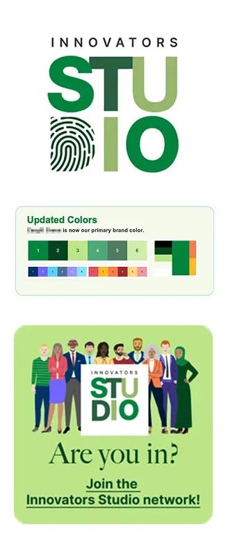
Standing out while fitting in
- Its own look, still inside corporate guidelines
- Bright, high-energy, hard to miss
- Templates people actually wanted to use
- One system every internal team could follow
Illustrations
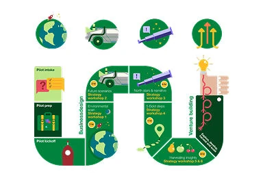
Turning ideas into pictures
- Custom scenes showing what the Studio is for
- Pictures of people, not process diagrams
Badges
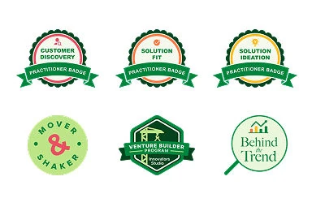
Making progress visible
- Skills and milestones you can earn
- Badges worth collecting
Storytelling
Innovation work drowns in its own vocabulary, so we built templates anyone could pick up to tell a credible story: presentations, newsletters, and podcast promos.
Presentations
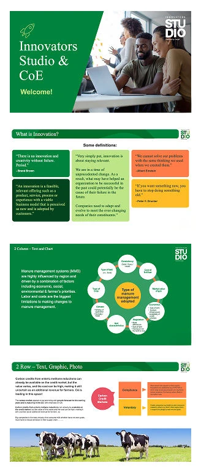
Making every slide count
- One branded template set for everyone
- A consistent way to show data
- Room for speakers to make it their own
- Pacing that keeps a room awake
Newsletters
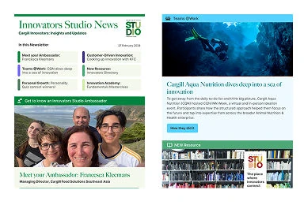
Getting read, not deleted
- Updates that keep the priorities visible
- Layout that lets readers decide fast
Podcast promos
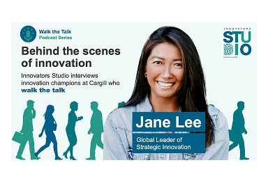
Giving voice visual form
- Puts internal voices in front of the network
- A look that matches each episode’s theme
Campaigns
Every campaign held one identity across email, intranet, and events, so a launch felt like one launch, not five nudges.
Campaigns
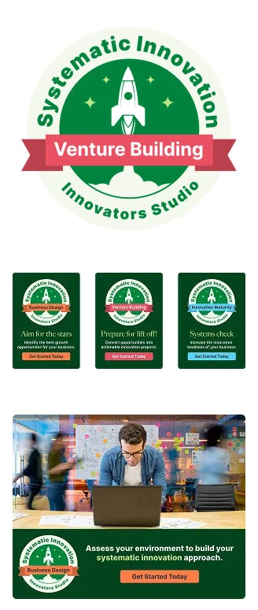
Creating momentum that lasts
- One identity across every piece
- Graphics built around each launch theme
- A version for every format it has to run in
One-pagers
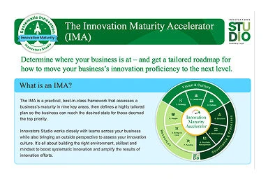
The essentials only
- A program explained on one page
- What it’s for and why it’s worth your time
- Exactly how to take part
Business models
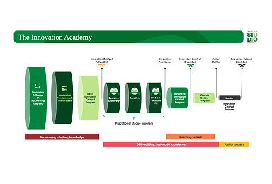
Complexity made clear
- Frameworks that fit a complex idea on one page
Studio portal
The Studio portal, on SharePoint, carried the network between launches, so energy from one program didn’t bleed out before the next began.
Community hub
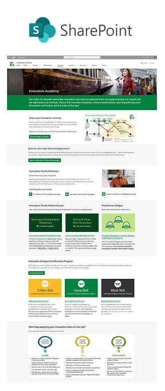
Where everyone connects
- Layouts for news and member spotlights
- Organized around how people actually work
- Clear routes to the deeper material
Innovators directory
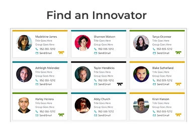
Find your people
- Profiles that lead with what someone knows
- Tools for finding the right person to work with
Innovation academy
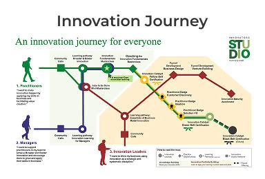
Charting your growth
- A learning path for each role
- See how far along you are
The impact
How I measured this
How the one measured figure above was counted, and what it cannot tell you.
- Campaign production time, roughly half
- The marketing team’s hours per campaign kit (the newsletter, the deck, and the promo set) before and after the template library, from their project timesheets across a handful of campaigns. A small sample, so read it as a direction rather than a precise figure.
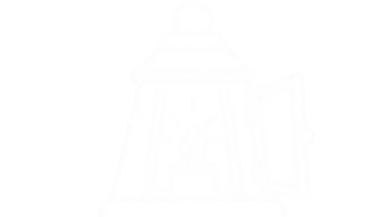
Brand and platform turned an invisible network into a visible community, and intrapreneurs started bringing their ideas through it.